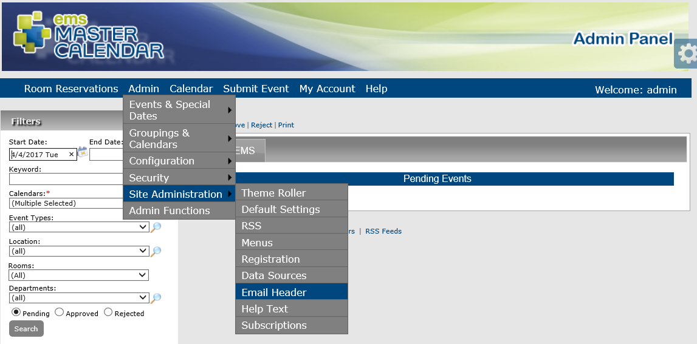
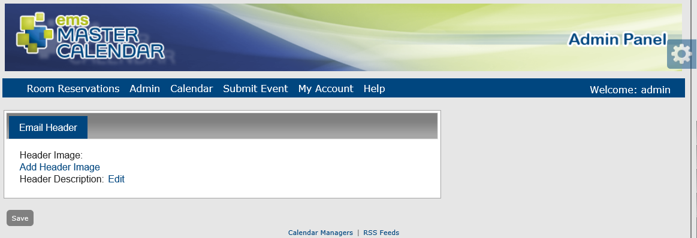

Automated emails can be sent from many areas within your Master Calendar application, including subscriptions, reminders, and change notifications. You can configure a customized email header for these automated emails, and you can also select a logo for these automated emails that is displayed in the upper right hand corner of the automated emails.


NOTE: The new logo must be an image in one of the following formats —.jpg, .gif, .png, .bmp, and .ico.